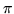

pname = value or pname := value
where pname is any parameter name. Parameters can then be used in
element definitions. Value can also be an arithmetic expression
involving other parameters. Throughout the element definitions, a
parameter value can also be an arithmetic expression. Note that in
dimad the relationships between parameters are lost, but during
the machine definition phase they are treated correctly.
Examples:Note: the value of  if needed must be defined as an input parameter (say as PI = ).
lslot=100
lb=lslot/8
lh = sqrt(lslot)
The value halfturn must be understood as either
radians or as 180 degrees depending on the units chosen.